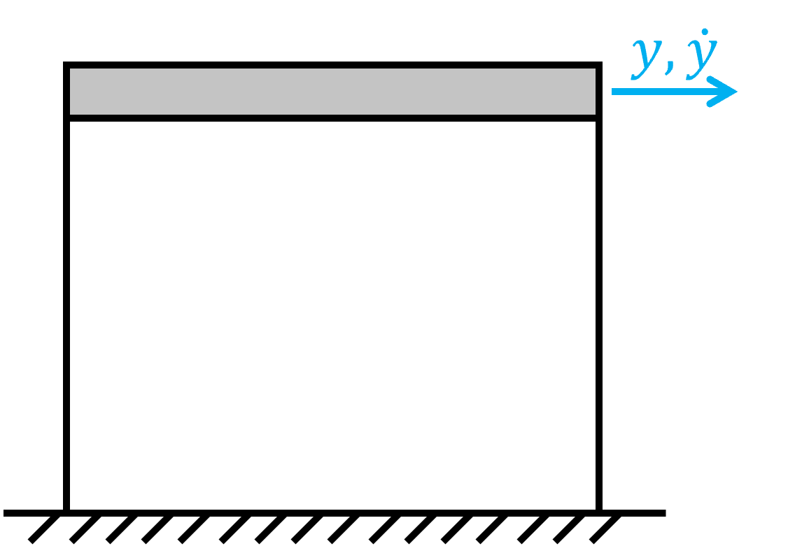
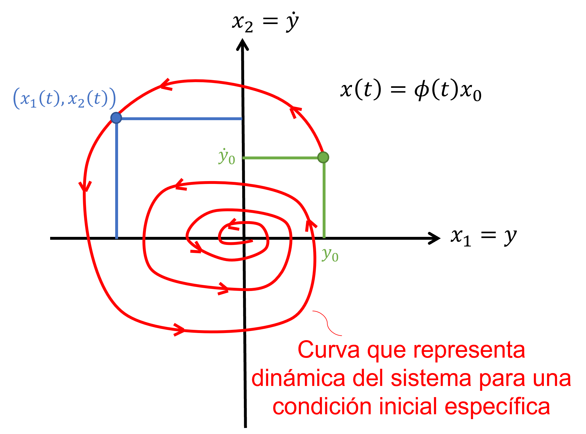
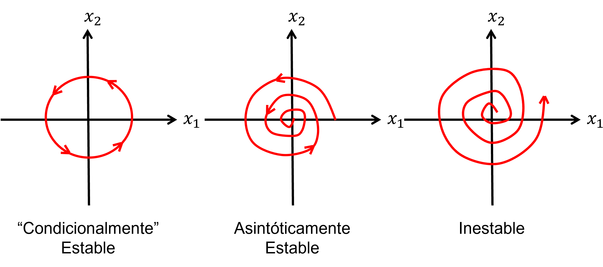
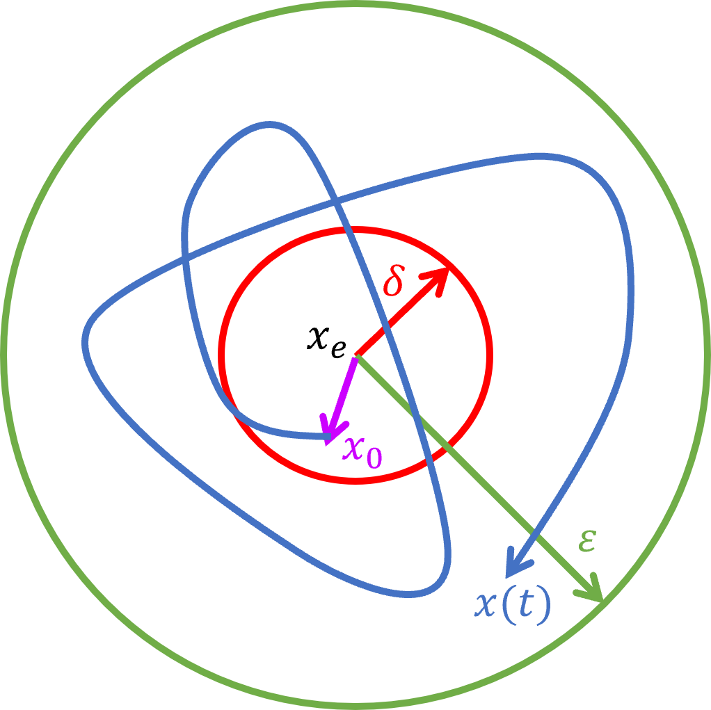
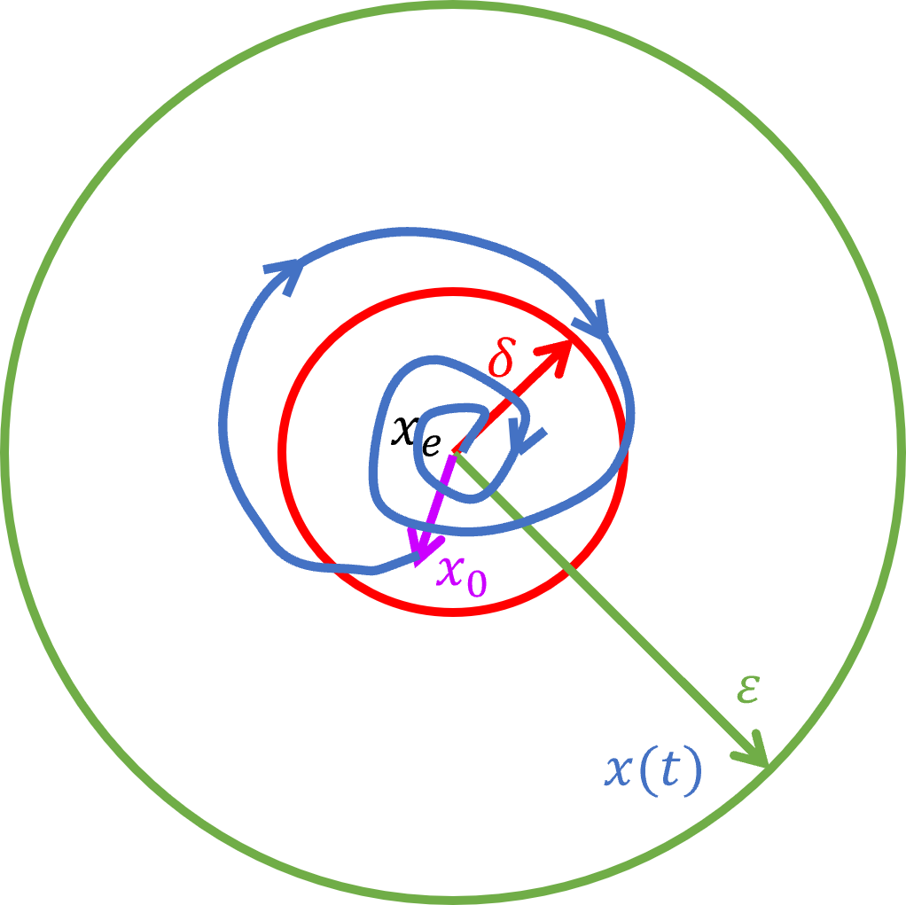
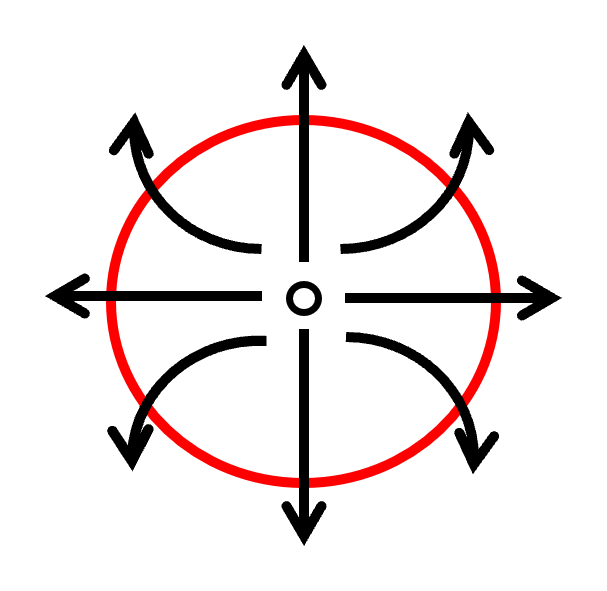
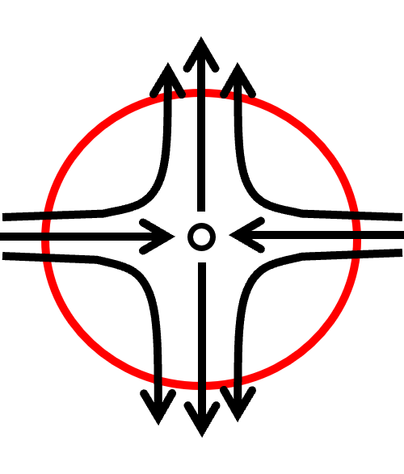
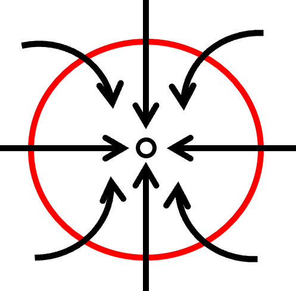
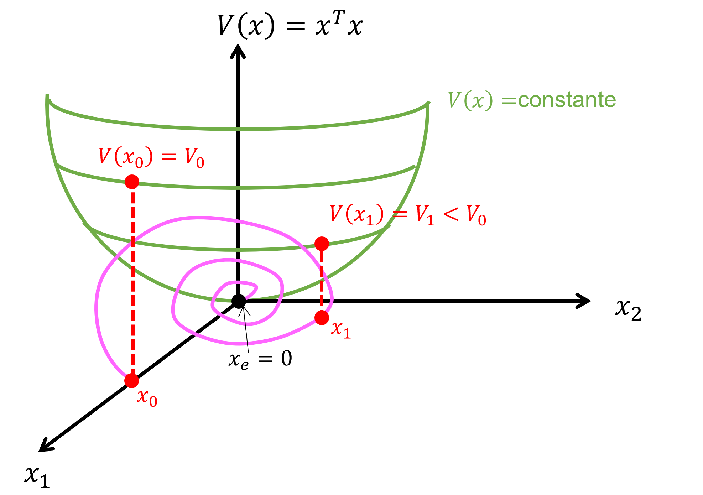
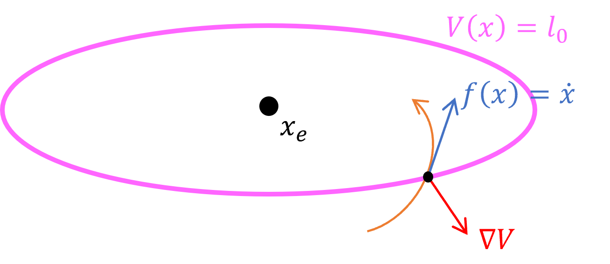

Sea un sistema LTI autónomo, es decir, sin entrada \(u(t) = 0\).
\begin{equation} \dot {x}(t) = {A} {x}(t) \end{equation}
donde \(x(t) \in \mathbb {R}^n\) y \(A \in \mathbb {R}^{n \times n}\). Su solución \({x}(t)\) para una condición inicial \(x(0) = x_0\) se puede obtener utilizando transformación de Laplace:
Definiendo \( {\phi }(t) = e^{ {A}t}\) como la matriz de transición de estados, la respuesta de los estados del sistema queda determinada por la siguiente expresión:
\begin{align} {x}(t) = {\phi }(t){x_0} \end{align}
Notar que \( {\phi }(t)\) es una matriz que varía en función del tiempo.
Aparte: Para entender qué significa \(e^{ {A}t}\) hay que recordar la Expansión de Taylor de una exponencial.
Definición: Sea \(f(t)\) una función suave y continua, su Expansión de Taylor en torno a \(t_0 = \alpha \) es la siguiente:
\begin{align*} f(t) = f(\alpha )+\frac {\dot {f}(\alpha )}{1!}(t-\alpha )+\frac {\ddot {f}(\alpha )}{2!}(t-\alpha )^2+... = \sum _{n=0}^{\infty }{\frac {(t - \alpha )^n}{n!}\frac {d^n}{dt^n}f(t = \alpha )} \end{align*}
aplicando la expansión en una función exponencial en en torno a \(\alpha = 0\):
\begin{align*} e^{at} = 1+at+\frac {1}{2!}a^2t^2+\frac {1}{3!}a^3t^3+... = \sum _{i=0}^{\infty } \frac {a^i t^i}{i!} \end{align*}
La Expansión de Taylor de una exponencial también converge en torno a \(\alpha = 0\) cuando se utiliza una matriz \(A\) cuadrada. Por lo tanto, \({\phi }(t) = e^{{A}t}\) se puede calcular utilizando la siguiente serie:
Notar que la expansión de Taylor de \({\phi }(t) = e^{{A}t}\) es una serie infinita. La serie finita se obtiene con el Teorema de Cayley-Hamilton que se explica más adelante.
Nota: \({\phi }(t)\) satisface la ecuación de estado:
Si tenemos un sistema LTI con entrada exógena, es decir, con entrada \(u(t)\), la respuesta se encuentra de forma análoga:
Notar que:
\begin{align*} {\phi }(t-\tau )&=e^{{A}(t-\tau )}\\ &=e^{{A}t} e^{-{A}\tau }\\ &={\phi }(t){\phi }(-\tau ) \end{align*}
Aparte: Del problema de valores propios de \(A \in \mathbb {R}^{n \times n}\):
\[{A}{v}=\lambda {v}\]
donde \(\lambda \in \mathbb {C}\) y \(v \in \mathbb {C}^n\) son el vector y valor propio asociado.
Si \({x_0}={v}\), entonces \({x}(t)={\phi }(t){v}\)
Aparte: \(\phi (t)\) es una serie infinita que converge:
\begin{align*} \lim _{t \to \infty } \phi (t)<\infty \end{align*}
ssi \(\text {Re}(\lambda )<0\). Entonces el sistema LTI es estable.
Definición: Una matriz \(A\) se dice que es Hurwitz ssi los valores propios de \(A\) tienen una parte real estrictamente negativa.
Teorema 1 (Teorema de Cayley-Hamilton). Sea una matriz \(A\in \mathbb {R}^{n\times n}\), cuya ecuación característica está dada por el siguiente polinomio de orden \(n\):
\[\Delta _A(s)=\det (s{I}-{A})=s^n+\alpha _{n-1}s^{n-1}+...+\alpha _1s+\alpha _0=0\]
donde \(\alpha _i\in \mathbb {R}\), \(i\in [0,n-1]\), son los coeficientes del polinomio característico de \(A\). Entonces, el teorema establece que la matriz \(A\) también satisface la ecuación característica:
\[\Delta _A(A) = {A}^n+\alpha _{n-1}{A}^{n-1}+...+\alpha _1{A}+\alpha _0{I}={0}\]
Del teorema, podemos despejar \({A}^n\): \begin{align*} {A}^n &= -\left [\alpha _{n-1}{A}^{n-1}+...+\alpha _1{A}+\alpha _0{I} \right ] \end{align*}
El poder de una matriz se escribe como una serie polinomial de orden igual al exponente del poder.
\(\Longrightarrow \) Este resultado es útil para evaluar la matriz de transición \(\phi (t)\) \begin{align*} {\phi (t)}=e^{{A}t}=\sum _{i=0}^\infty \beta _i(t){A}^i \overset {\text {(C-H)}}{=} \sum _{i=0}^{n-1}\gamma _i(t){A}^i \end{align*}
Nota: Este resultado es útil para evaluar \(\phi (t)\) como una serie finita en términos de \(A^i\).
El retrato de fase (phase portrait) es una representación gráfica de las trayectorias de un sistema dinámico en el tiempo,
es decir, se puede observar como varían los estados en función del tiempo y entender mejor el comportamiento del
sistema. También permite observar gráficamente la estabilidad.
Ejemplo: Considere el siguiente sistema dinámico LTI Autónomo de un grado de libertad.

\begin{align*} \Longrightarrow {\dot {x}}(t) ={A}{x}(t) \end{align*}
donde \({x}(t)=\begin{bmatrix} y(t)\\ \dot {y}(t) \end{bmatrix}\), con condiciones iniciales \(y_0\), \(\dot {y}_0\), se puede generar el siguiente diagrama de fase en el que se observa cómo varían los estados en el tiempo.

Notar que el retrato de fase puede ser para cualquier vector de estados y no únicamente para dos estados como en este ejemplo.

Sea el sistema dinámico LTI en representación espacio-estado: \[{\dot {x}}={A}{x}+{B}{u} \]
encontraremos una expresión para encontrar el estado en equilibrio \(x_e\).
Definición: El equilibrio del sistema está dado por la condición de que \(x\) no cambia en el tiempo: \begin{align*} {\dot {x}} = {0} \end{align*}
Entonces, despejando el estado de equilibrio \(x_e\) desde el sistema LTI: \begin{align*} &\Longrightarrow {0}={A}{x_e}+{B}{u_e} \\ &\Longrightarrow {x_e}=-{A}^{-1}{B}{u_e} \Longrightarrow \text { Estados de Equilibrio Estático} \end{align*}
donde \(x_e\) es el vector de estado en equilibrio y \(u_e\) es el vector de entrada en el equilibrio, ambos constantes.
Notas
Sea un sistema dinámico LTI y autónomo: \(\dot {x}=Ax\), \(x(0) = x_0\) y \(x_e\) un punto de equilibrio del sistema. Vamos a definir la estabilidad
respecto a un punto de equilibrio.
Definición: \(x_e\) es estable en el sentido de Lyapunov si para cualquier \(\varepsilon >0\) existe un \(\delta >0\) tal que: \[||x_0-x_e||<\delta \Longrightarrow ||x(t)-x_e||<\varepsilon , \quad \forall t>0\]

* Mínima restricción que podemos imponer para satisfacer estabilidad.
\(x_e\) es asintóticamente estable si existe \(\delta >0\) tal que:

\(x_e\) es estable asintótica global ssi es asintóticamente estable para \(\delta \to \infty \).
|  |  |  |
|
| Estable | ✗ | ✗ | ✓ |
| Asint. Est. | ✗ | ✗ | ✓ |
| Goblal Asint. Est. | ✗ | ✗ | ??? |
Sea el sistema LTI autónomo \(\dot {x}(t)=Ax(t)\), cuya solución es \(x(t)=\phi (t)x_0\) y \(x_e\) un estado de equilibrio. Se requiere analizar la estabilidad en el
sentido de Lyapunov. Por lo cual hay que analizar las normas \(||x(t) - x_e||\) y \(||x_0 - x_e||\)
Suponiendo que \(\phi (t)\) es finita, es decir, \(||\phi (t)||=||e^{At}||\leq \beta <\infty \). Se tiene que la siguiente diferencia de vectores de estados: \begin{align*} x(t)-x_e &= \phi (t)x_0-x_e\\ &= \phi (t)x_0-\phi (t)x_e\\ &= \phi (t)[x_0-x_e] \end{align*}
Para este sistema, notar que si \(x_0 = x_e\), entonces \(x(t)=x_e\), es decir, si el estado inicial es un estado de equilibrio (por ejemplo, el
reposo) y si no existen exitaciones, entonces los estado \(x(t)\) se mantendrán constantes e igual a al estado de equilibrio \(x_e\),
para \(\phi (t)x_e=x_e\).
Entonces, extrayendo la norma de la expresión anterior: \begin{align*} ||x(t)-x_e||=||\phi (t)[x_0-x_e]||\leq ||\phi (t)||\cdot ||x_0-x_e|| \end{align*}
Luego, si \(||x_0 - x_e||<\delta \) \begin{align*} &\Longrightarrow ||x(t)-x_e||\leq ||\phi (t)|| \delta \end{align*}
Si definimos \(||\phi (t)||\delta = \varepsilon \): \begin{align*} &\Longrightarrow ||x(t) - x_e|| \leq \varepsilon \end{align*}
Por lo tanto, si \(\phi (t)\) es finito, implica que \(x_e\) es estable en el sentido de Lyapunov. \(\phi (t)\) es finito si y solo si \(A\) es Hurwitz: \begin{align*} \text {Re}\left (\text {eig}(A)\right )<0\Longrightarrow \text {Estabilidad} \end{align*}
Definición: Sea una función \(V(x)\), \(\mathbb {R}^n\to \mathbb {R}\), tal que:
Entonces, \(V(x)\) es una función candidata de Lyapunov.
Teorema 2. Si \(V(x)\) s una función candidata de Lyapunov para \(x_e\) en una región \(\Omega \) vecina a \(x_e\):
Ilustración: Sean \(x=\begin{bmatrix}x_1\\ x_2\end{bmatrix}\), \(x\in \mathbb {R}^2\), \(x_e=0\) y \(V(x)=x^T x\) una función candidata de Lyapunov.

Notar que: \begin{align*} \frac {dV(x)}{dt} < 0 \end{align*}
Ocupando \(V=V(x(t))\). Entonces: \begin{align*} \frac {dV}{dt} &= \frac {\partial V}{\partial x}\cdot \frac {\partial x}{\partial t} \quad \text {Regla de la cadena}\\ &= \sum _{i=1}^n \frac {\partial V}{\partial x_i}\cdot \frac {\partial x_i}{\partial t}\\ &= \begin{bmatrix}\frac {\partial V}{\partial x_1} &...& \frac {\partial V}{\partial x_n}\end{bmatrix}\begin{bmatrix}\dot {x}_1\\ \vdots \\ \dot {x}_n\end{bmatrix}\\ &= \nabla V\cdot \dot {x} \end{align*}
\begin{align*} \frac {dV}{dt}=\nabla V\cdot \dot {x}<0, ~\forall t \end{align*}
Dibujemos una línea de contorno de \(V(x)\):

\begin{align*} \nabla V\cdot f(x)<0 \Longrightarrow \text {Entonces el sistema se acerca a } x_e \end{align*}
\(\Longrightarrow x_e\) es un punto de atracción o sumidero.
Para el sistema LTI autónomo \(\dot {x}=Ax\), y sea \(V(x)=x^T Px\), donde \(P\) es una matriz definida positiva y simétrica. \[\frac {dV}{dt}=\nabla V\cdot \dot {x}<0 \]
para un sistema asintóticamente estable.
\begin{align*} \nabla V=\frac {\partial }{\partial {x}} ({x}^T {P}{x}) = 2{P}{x} \quad \text {Por demostrar} \end{align*}
Entonces: \begin{align*} \frac {dV}{dt} &= (2Px)^T (Ax)= (2x^T P^T)(Ax)\\ &= (x^T P^T)(Ax)+x^T P^T Ax\\ &= (Px)^T(Ax)+x^T PAx\\ &= (Ax)^T(Px)+x^T PAx\\ &= x^T A^T Px+x^T PAx\\ &= x^T (A^T P+PA)x<0 \end{align*}
Por lo tanto, \(A^T P+PA \prec 0\) debe ser una matriz definida negativa para que el sistema sea asintóticamente estable.
Sea \(Q\) una matriz definida positiva y simétrica, tal que: \begin{align*} &\phantom {\Longrightarrow } A^T P+PA = -Q\\ &\Longrightarrow A^T P + P A + Q = 0 \quad \text {Ecuación de Lyapunov} \end{align*}
Teorema 3. Dados \(Q \succ 0\) y simétrico, existe un único \(P\succ 0\) y simétrico que satisface:
\[A^T P + P A + Q = 0.\]
Entonces, \(\dot {x}=Ax\) es asintóticamente estable.
Sea un sistema LTI: \(\dot {x}=Ax+Bu\), \(x\in \mathbb {R}^n\), \(u\in \mathbb {R}^p\). Buscamos \(u(t)\) tal que los estados vayan de \(x(t)\) a cero en un tiempo finito \(t_1\).
Recordar que la solución de un sistema LTI no autónomo es: \begin{align*} x(t)=\phi (t)x_0+\int _0^t \phi (t-\tau )Bu(\tau )d\tau \end{align*}
Luego, si \(x(t_1) = 0\) \begin{align*} 0=\phi (t_1)x_0+\int _0^{t_1} \phi (t_1-\tau )Bu(\tau )d\tau \end{align*}
Considerando la propiedad: \(\phi (t_1-\tau )=e^{A(t_1-\tau )}=e^{At_1}\cdot e^{-A\tau }=\phi (t_1)\phi (-\tau )\). Entonces:
\begin{align*} 0 &=\phi (t_1)\left [x_0+\int _0^{t_1}\phi (-\tau )Bu(\tau )d\tau \right ] \\ \Longrightarrow -x_0 &= \int _0^{t_1}\phi (-\tau )Bu(\tau )d\tau \end{align*}
Por el teorema de Cayley-Hamilton: \begin{align*} \phi (-\tau )=m_0(\tau )I+m_1(\tau )A+m_2(\tau )A^2+...+m_{n-1}(\tau )A^{n-1} \end{align*}
Entonces: \begin{align*} -x_0 &= \int _0^{t_1}\left [m_0(\tau )B+m_1(\tau )AB+m_2(\tau )A^2B+...+m_{n-1}(\tau )A^{n-1}B \right ]u(\tau )d\tau \\ \Longrightarrow -x_0 &= \int _0^{t_1} \sum _{j=0}^{n-1}A^jBm_j(\tau )u(\tau )d(\tau )\\ \Longrightarrow -x_0 &= \sum _{j=0}^{n-1}A^jB \int _0^{t_1} m_j(\tau )u(\tau )d\tau \end{align*}
Cada término de la integral es un vector constante de dimensión \(p\times 1\) \begin{align*} \Longrightarrow v_j := -\int _0^{t_1}m_j(\tau )u(\tau )d\tau \end{align*}
\begin{align*} \Longrightarrow x_0 &= \sum _{j=0}^{n-1}A^jBv_j =Bv_0+ABv_1+...+A^{n-1}Bv_{n-1}\\ \Longrightarrow x_0 &= \underbrace {\left [ \begin{array}{c|c|c|c|c} B & AB & A^2B & ... & A^{n-1}B \end{array}\right ]}_{\mathcal {C}} \underbrace {\left [ \begin{array}{c} v_0\\ \hline v_1 \\ \hline v_2 \\ \hline \vdots \\ \hline v_{n-1} \end{array}\right ]}_{V} \end{align*}
Por lo tanto, se define la Matriz de Controlabilidad \(\mathcal {C}\):
\begin{align*} \mathcal {C}=\left [ \begin{array}{c|c|c|c|c} B & AB & A^2B & ... & A^{n-1}B \end{array}\right ] \end{align*}
Escribiendo nuevamente el sistema lineal de ecuaciones:
\[x_0 = \mathcal {C} V\]
donde \(\mathcal {C} \in \mathbb {R}^{n \times np}\), \(x_0 \in \mathbb {R}^{n \times 1}\), y \(V \in \mathbb {R}^{np \times 1}\).
Este resultado indica que cualquier vector \(x_0\) puede ser expresado como una combinación lineal de las
columnas de la matriz \(\mathcal {C}\). La solución de \(V\) (vector con comandos incógnito) es única ssi \(\mathcal {C}\) tiene rango completo
\(n\).
Por lo tanto, un sistema LTI es controlable ssi \(\text {rank}(\mathcal {C})=n\).
Nota: Si \(\text {rank}(\mathcal {C})= n_e < n\), entonces el sistema tiene no más de \(n_e\) estados controlables.
Definición: Si el sistema tiene estados inestables, pero controlables, entonces se dice que estos estados
son estabilizables. Por lo tanto, puede diseñar \(u(t)\) tal que el sistema cerrado tenga todos sus estados
estables.
Nota: Sea el sistema LTI, \(\dot {x}=Ax+Bu\), y sea \(T\) una matriz de transformación tal que \(x=Tz\), donde \(\dot {z}=A_cz+B_cu\), es una realización CCF. Entonces, el sistema es controlable ssi \(T\) existe.
Teorema 4. Las siguientes afirmaciones son equivalentes para un sistema LTI contínuo:
Asuma el sistema LTI autónomo:
\begin{align*} \dot {x} &= Ax, \quad x\in \mathbb {R}^n\\ y &= Cx, \quad y\in \mathbb {R}^r \end{align*}
\begin{align*} \begin{array} {|c|} \hline \text {Caja}\\ \text {Negra} \\ \hline \end{array} \longrightarrow y\in \mathbb {R}^r \end{align*}
La pregunta que nos formulamos es: ¿podemos reconstruir los estados \(x(t)\) del sistema solo con información de la respuesta medida \(y(t)\)? Para responder esta pregunta, suponer que conocemos la respuesta inicial, y todas sus derivadas temporales de orden superior: \(Y_0 = \{y(0),\dot {y}(0),\ddot {y}(0),\ldots ,y^{(n-1)}(0)\}^{T}\). Entonces, queremos reconstruir el estado inicial \(x(0)=x_0\) que no es posible medir directamente.
Sabemos que la respuesta es proporcional a los estados:
\begin{align*} y(0) &= C x(0) =C x_0 \\ \dot {y}(0) &= C \dot {x}(0) =C Ax_0 \\ \ddot {y}(0) &= C \ddot {x}(0) =C A^2 x_0 \\ y^{(3)}(0) &= C x^{(3)}(0) =C A^3 x_0 \\ \vdots & \\ y^{(n-1)}(0) &= C x^{(n-1)}(0) =C A^{n-1} x_0 \\ \end{align*}
Escribimos el siguiente sistema lineal de ecuaciones:
\begin{align*} \underbrace {\begin{bmatrix} y(0) \\ y^{(1)}(0) \\ y^{(2)}(0) \\ \vdots \\ y^{(n-1)}(0) \end{bmatrix}}_{Y_0} = \underbrace {\begin{bmatrix} C \\ CA \\ CA^2 \\ \vdots \\ CA^{n-1} \end{bmatrix}}_{\mathcal {O}} x_0 \end{align*}
Se define:
\begin{align*} \mathcal {O}=\left [ \begin{array}{c} C\\ \hline CA \\ \hline CA^2 \\ \hline \vdots \\ \hline CA^{n-1} \end{array}\right ] \quad \text {Matriz de observabilidad} \end{align*}
Entonces, el sistema lineal se escribe:
\[ Y_0 = \mathcal {O} x_0 \]
donde \(\mathcal {O} \in \mathbb {R}^{nr \times n}\), \(x_0 \in \mathbb {R}^{n \times 1}\), y \(Y_0 \in \mathbb {R}^{nr \times 1}\).
Del análisis, sólo podemos reconstruir el estado inicial \(x_0\) (incógnita) de las observaciones \(Y_0\) (datos), tal que la solución sea única, si y solo si la matriz de observabilidad \(\mathcal {O}\) tiene rango completo.
Por lo tanto, un sistema LTI es observable ssi \(\text {rank}(\mathcal {O})=n\)
Definición: Si un estado es inestable, pero observable, entonces dicho estado se dice que es detectable.
Teorema 5. Las siguientes afirmaciones son equivalentes para un sistema LTI contínuo:
Una realización mínima \((A,B,C)\) es aquella que describe un sistema dinámico con un número mínimo de estados, que es igual a la dimensión del sistema de ecuaciones diferenciales.
Una realización \((A,B,C)\) es mínima ssi el sistema es tanto controlable y observable.
Diseño de observadores, identificación de sistemas, control óptimo, etc.